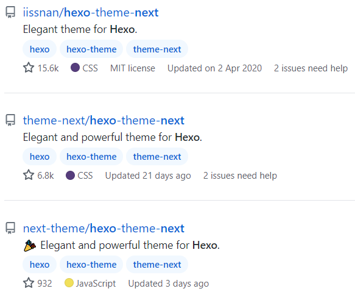

Hexo启航:+Next主题配置
最近思量写博客来记录学习，通过查阅博客撰写相关的资料，发现很多关于静态博客相关的东西，其中网上很多关于Hugo、Hexo与Jekyll的对比。鉴于Hugo使用Go,Jekyll使用Ruby,Hexo使用Javascipt，而关于网页我最开始能联想到的就是html/javascript/css，且网上关于Hexo的文档及资源也比较多，主题丰富，开发生态不错，所以选择了Hexo。
轻松的开始到差点放弃
follow官网主页 Hexo就可以很快地搭建起Demo博客。简单步骤如下：
- 安装软件
- Nodejs
- Git
- Hexo快速指南
跟着下面的步骤走，网页中输入http://localhost:4000/，很快就能看到基于默认Landscape主题的博客页。1
2
3
4
5npm install hexo-cli -g
hexo init blog
cd blog
npm install
hexo server
关于主题，也是简单地了解了一些，简洁、易用、稳定、成熟的主题是我的首选，因此选择了大家广泛使用的Next主题。Hexo Next主题的网文资料也是很多，基本上按任意一篇博文指导下载对应的主题放入刚建立的博客themes文件夹下，重命名为next，然后在blog/_config.xml中启用theme: next，重新启动server就可以看到主题渲染的博客。
由于经常需要与数学公式打交道，所以公式的渲染也是主要的需求。高兴地是，Next主题支持MathJax和Katex公式渲染；然而，follow好些篇博文（包含iissan的）配置，要么出现公式不渲染，要么出现公式源码和公式同时渲染，真是差点从开始到丢弃。。。
成功配置
经过不懈地折腾，最终还是成功地实现了公式地渲染。Next主题获取渠道很多，刚开始我是根据github iissan和theme-next.org的配置，最新发布版本分别是v5.1.4和v7.8.0，结果无论如何都不能正常渲染公式，会出现公式源码。最后通过下图star星最少的链接，下载8.4.0版本，然后在theme/next/_config.yml启用katex:true,愉快地实现了公式正常的渲染。

现在也还是不清楚这几个链接之间的关系，尤其后面两个，其中一个提供主页是theme-next.org，一个是theme-next.js.org。不过暂时能满足我最基本的需求了，先不想去了解，往下写写再说吧。